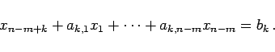
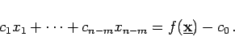
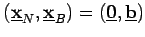
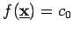

Mit dem Simplexverfahren wird eine Folge von Eckpunkten des zulässigen Bereiches mit wachsenden Zielfunktionswerten ermittelt. Der Übergang zu einer neuen Ecke wird vollzogen, indem eine zur gegebenen Ecke gehörende Normalform zu einer Normalform der neuen Ecke umgewandelt wird. Zur übersichtlichen Darstellung dieses Vorganges sowie zur Formalisierung der rechentechnischen Umsetzung wird eine als bekannt vorausgesetzte Normalform (18.8a,b) in das folgende Simplextableau eingetragen:
Die k-te Zeile des Tableaus ist zu lesen als
|  | (18.14a) |
Für die Zielfunktion gilt
|  | (18.14b) |
Aus dem Simplextableau wird die Ecke  abgelesen. Gleichzeitig ist der Zielfunktionswert dieser Ecke durch  bestimmt.
Auf jedes Tableau trifft genau einer der drei Fälle zu: